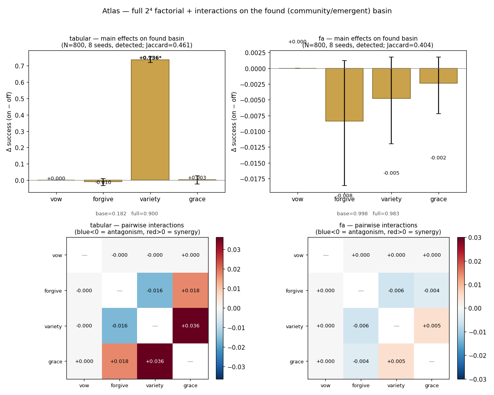

WORKGROUND · ATLAS
Atlas — The full factorial on a found basin
Lab III's 2⁴ factorial lived on a planted demon. Here the same factorial — all four mechanisms {vow, forgive, variety, grace}, main effects and the six pairwise interactions — runs on the hardest world in the atlas: a stochastic-block community whose basin is detected, not labelled. No mechanism sees the true basin; they act on what the unsupervised MFPT trap-score finds.
site/workground/_run_factorial_community_slice.py over
lab5kit (Rust engine, N=800, 8 seeds, detected basin;
tabular world-seed 42, FA world-seed 43), machine-readable in
atlas/factorial_community.json. ~9 s wall.Main effects
Effect = mean(success | factor on) − mean(success | factor off), averaged over the other 8 cells; 95% seed-bootstrap CI. A row is significant when its CI excludes zero.
| agent | factor | effect | CI low | CI high | verdict |
|---|---|---|---|---|---|
| tabular | vow | +0.000 | +0.000 | +0.000 | null |
| tabular | forgive | −0.010 | −0.033 | +0.011 | ns |
| tabular | variety | +0.736 | +0.721 | +0.754 | significant |
| tabular | grace | +0.003 | −0.023 | +0.026 | ns |
| fa | vow | +0.000 | +0.000 | +0.000 | null |
| fa | forgive | −0.008 | −0.019 | +0.001 | ns |
| fa | variety | −0.005 | −0.012 | +0.002 | ns |
| fa | grace | −0.002 | −0.007 | +0.002 | ns |
Endpoints: tabular base (all off) = 0.183, full (all on) = 0.900, detector Jaccard = 0.461. FA base = 0.998, full = 0.983, Jaccard = 0.404.
The six pairwise interactions
Non-additivity, lab3 convention (2⁴ contrast, ±2 scaling): negative = antagonism (mechanisms get in each other's way), positive = synergy. Threshold ±0.02.
| pair | tabular | tag | fa | tag |
|---|---|---|---|---|
| vow | forgive | +0.000 | ~additive | +0.000 | ~additive |
| vow | variety | −0.000 | ~additive | +0.000 | ~additive |
| vow | grace | +0.000 | ~additive | +0.000 | ~additive |
| forgive | variety | −0.016 | antagonism (sub-thr) | −0.006 | ~additive |
| forgive | grace | +0.018 | synergy (sub-thr) | −0.004 | ~additive |
| variety | grace | +0.036 | synergy | +0.005 | ~additive |

Honest verdict
On a found basin the apparatus collapses to one mechanism — and only for the tabular learner. For tabular Q-learning, variety alone is load-bearing: +0.736 (CI [+0.721, +0.754]), lifting bare 0.183 → 0.900. Vow is an exact null (the costly-return shaping has nothing to grip when the basin is only ~46% recovered), forgive and grace are statistically indistinguishable from zero. This sharpens lab3's "variety carries it, mostly no for the rest" — on a detected rather than planted demon, the rest is not merely small, it is gone.
Do the antagonisms survive? Mostly they evaporate. lab3's headline negatives were vow×variety (−0.023), forgive×variety (−0.028), vow×forgive (−0.021). Here vow's interactions are exactly zero (a null factor cannot antagonise), and forgive×variety shrinks to −0.016 — present in sign, but sub-threshold. The one real coupling that emerges is a positive one: variety×grace = +0.036 (synergy) for tabular. So on the found basin the toolkit does not so much fight itself as fall silent: with variety doing all the work, the other mechanisms have no margin in which to either help or harm. The "idolatry of the repair toolkit" speculation is confirmed in a stronger form — not "the parts antagonise" but "the parts are inert."
tabular vs FA — representation decides everything. The linear-FA agent never enters the basin in a way the mechanisms can move: base = 0.998 already, so there is no gap to close and every effect is a tiny negative wobble (all CIs straddle or sit just below zero, all interactions ~additive). The spectral embedding lets FA route around the community block before any mechanism fires; the entire factorial is a flat null. This is the representation-dependence lab4·B flagged, in its most extreme form: the same four mechanisms that produce a +0.74 swing for a tabular learner produce nothing — neither help, harm, nor interaction — for an agent that already sees the graph's spectral structure. The mechanisms are not properties of the world; they are properties of the learner's blindness.
See also
- Lab V — the Robustness Atlas this slice belongs to: the same claim re-tested across instruments and worlds.
- Lab III — the original 2⁴ factorial on a planted demon; its negative interactions are the speculation this slice re-measures on a found basin.
- labcore — the Rust engine
(
lab5kit/labkit) that runs every cell of this factorial.